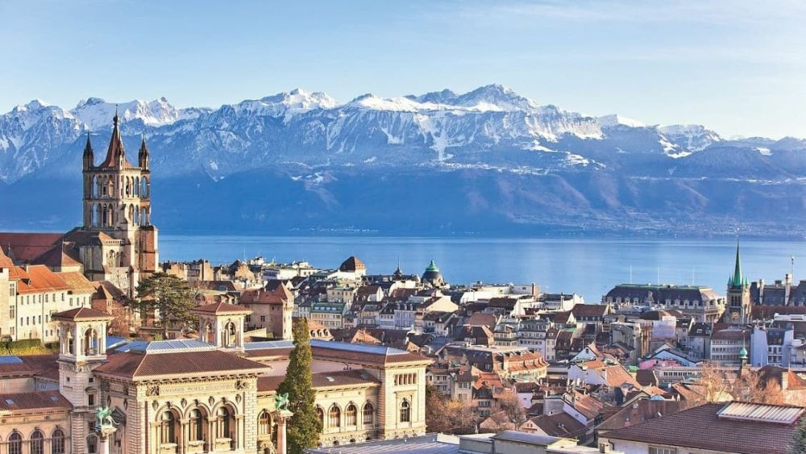

Descoperă Lausanne - O călătorie în Elveția
Lausanne este un oraș elegant situat pe malul Lacului Geneva, oferind o varietate de atracții captivante pentru vizitatori:
-

Muzeul Olimpic din Lausanne - Istorie și sport
Vizitați acest muzeu dedicat mișcării olimpice și aflați mai multe despre istoria și realizările sportive.
-

Catedrala din Lausanne - Arhitectură gotică
Descoperiți catedrala gotică impresionantă, care oferă o vedere panoramatică asupra orașului.
-

Parcul Olimpic din Lausanne - Relaxare și recreere
Bucurați-vă de spațiile verzi și facilitățile sportive din Parcul Olimpic din Lausanne.
-

Lacul Geneva din Lausanne - Relaxare pe malul lacului
Apropierea de lac oferă oportunități pentru plimbări relaxante și activități nautice.
-

Cartierul Flon din Lausanne - Artă și divertisment
Explorați acest cartier modern, cunoscut pentru galerii de artă, restaurante și activități culturale.
Concluzii
Lausanne oferă o combinație de cultură, istorie și frumusețe naturală, făcându-l un oraș atractiv pentru orice vizitator.